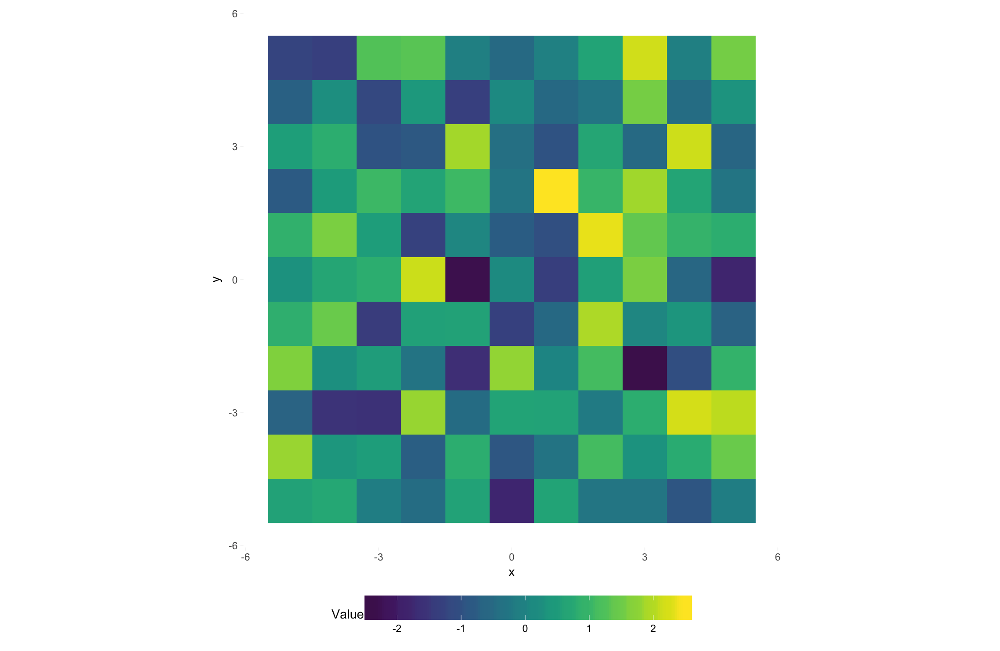
Preamble
In this fifth technical lab, we will complete any remaining steps of Monday’s demonstration lab then turn to steps necessary for the fifth assignment. These lab steps should be used extensively to aid with the completion of the fifth assignment due Sunday evening at 11:59pm.
A synopsis of the technical steps of the assignment listed as follows:
- Download Class 5 assignment data which includes 2 DEM tiles + a vector outline of the Manhattan Borough, NYC.
- Mosaic the two raster datasets into one continuous raster dataset.
- Mask (clip) the mosaic raster via the NYC Manhattan Borough vector layer.
- Utilize
constatements to isolate pixels that fall into potential flooding and storm surge thresholds. - Utilize the Raster Calculator to derive a final layer with threshold categories.
- Utilize the Field Calculator to derive areal totals and percentages across scenario categories.
- Create an nominal thematic map and respective legend for the scenario categories.
- Incorporate a summary table into the final layout.
- Complete assignment submission layout; load to assignment 5 PDF at CANVAS.
Data
The starter data utilized in this mapping includes a vector feature for the Borough of Manhattan and two USGS DEM raster tile coverage for Manhattan.

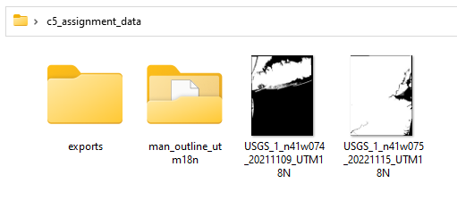
Assignment Step 1
- Download the Class 5 assignment data
The original DEM dataset comes from USGS National Map. See the animation below for the tile interface where you can download DEM tiles.

- Create an assignment
.mxd, placing it within your assignment 5 directory. Establish both your vector and raster data connections via ArcCatalog to your assignment.mxd.
Assignment Step 2
- Load both DEM tiles and the vector feature representing the Manhattan Borough outline:
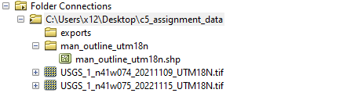
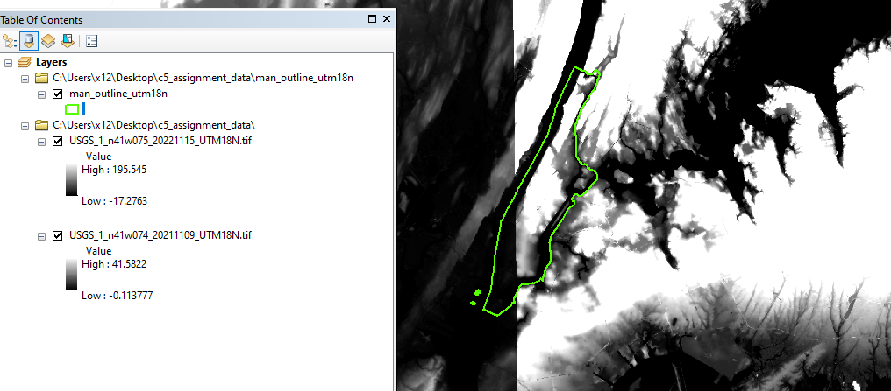
Notice that the Area of Interest (AOI) - Manhattan Borough - spans both DEM tiles. In this situation - where a AOI spans across multiple raster extents - the raster tiles need to be ‘merged’ into one continuous surface. In ArcGIS there are multiple ways to do this task, but the easiest and most accessible is the Mosaic to New Raster tool. This tool creates the continuous surface from multiple, separate surfaces. Once complete, this new raster can be ‘clipped’ to the edge of the vector feature representing the Manhattan Borough.
Enact the extension Spatial Analyst:
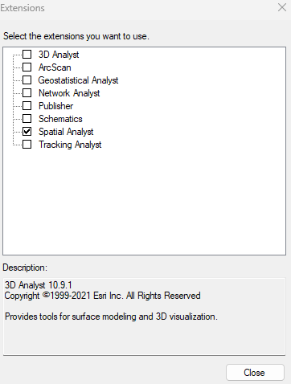
- Search for Mosaic to New Raster tool:
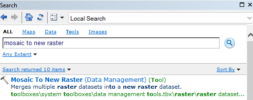
- Populate the tool:
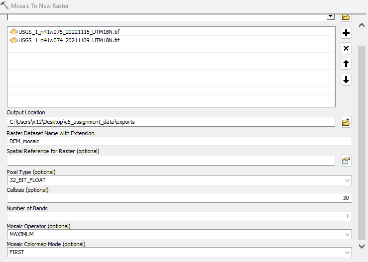
Assignment Step 3
- With the completion of Step 2, you will have a new raster,
DEM_mosaic. However, this new raster still spans outside the project area AOI of Manhattan Borough. We need to ‘clip’ the raster data to the edge of the vector feature for Manhattan Borough. Search for Extract by Mask tool:
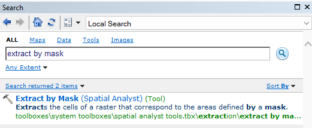
- Populate the tool:
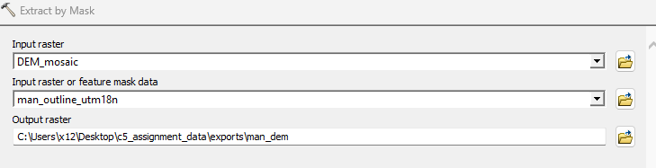
- Next, navigate to Layer Properties > Symbology within the new
man_demclipped raster. Apply a new Stretched color ramp:
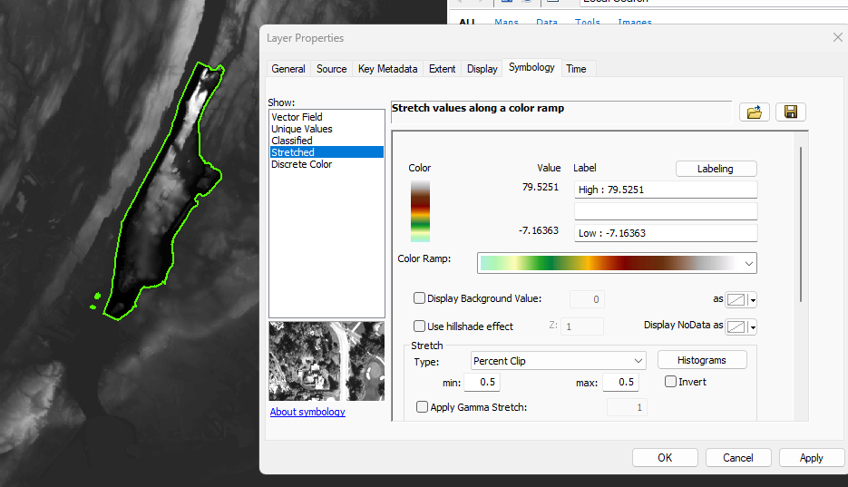
man_dem- Once complete, remove the previous rasters and save the
.mxd:
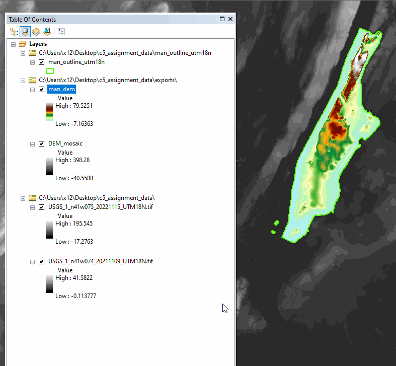
man_dem- Zoom into detail for the
man_demraster and run the Pixel Inspector tool along the edge of Manhattan. Notice that values across the interior of the Manhattan Borough (land) are all positive, while values at edge (water) are either0or< 0. In the following step, you will utilize the Raster Calculator to isolate the continuous values into meaningful threshold boolean rasters.
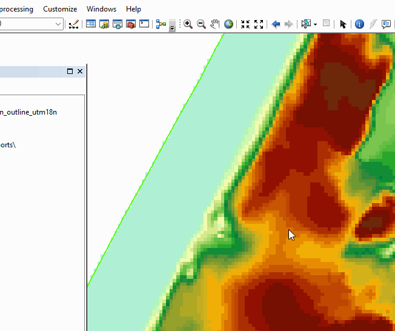
Assignment Step 4
- At this stage, the continuous raster that has been produced will now be transformed into a series of boolean rasters. You will set a series of conditions and then assign new values to cells meeting these boolean conditions.
Whereas expressions denote mainly numbers in elementary algebra, in Boolean algebra, they denote the truth values false and true. These values are represented with binary digits, typically 0 and 1 unless a different binary scheme of two boolean values is chosen.
- Run the series of Conditional (CON) statements in order to isolate raster cells that meet scenario criteria as follows:
- Which land is already underwater (elevation ≤ 0 m)
- Which areas will flood under a best-case scenario (BCS) (≤ 0.28 m)
- Which will flood under the worst-case scenario (WCS) (≤ 1.12 m)
- Which will flood under an extreme storm surge (≤ 10 m)
- Which is safe from flooding under all scenarios (> 10 m)
- You will assign unique values so that you can merge all grids in the final processing step: best-case scenario (value = 1), worst-case scenario (value = 3), flooded by storm surge (value = 5), area currently underwater (value = 0), and land currently above sea level (value = 7). Odd numbers are chosen so that their sums will produce an unique value scheme with complete separation between conditions.
To start, search for the conditional tool CON:
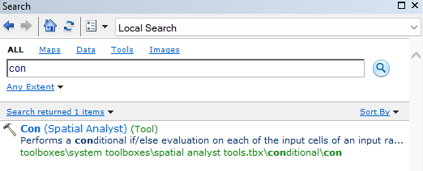
- Populate the tool with the first criteria for land vs water:
- Input conditional raster =
man_dem - Expression -
"VALUE"<=0 - True value =
0 - False value =
7 - Output to
Default.gdbasland
- Input conditional raster =
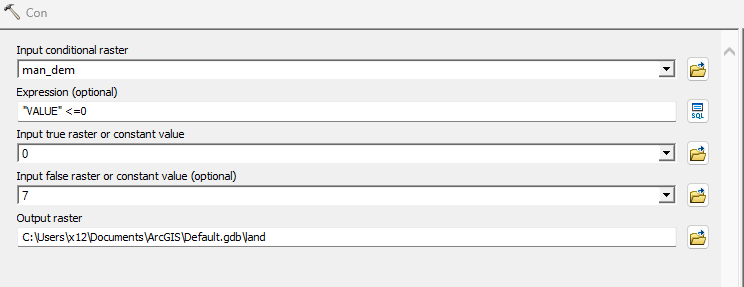
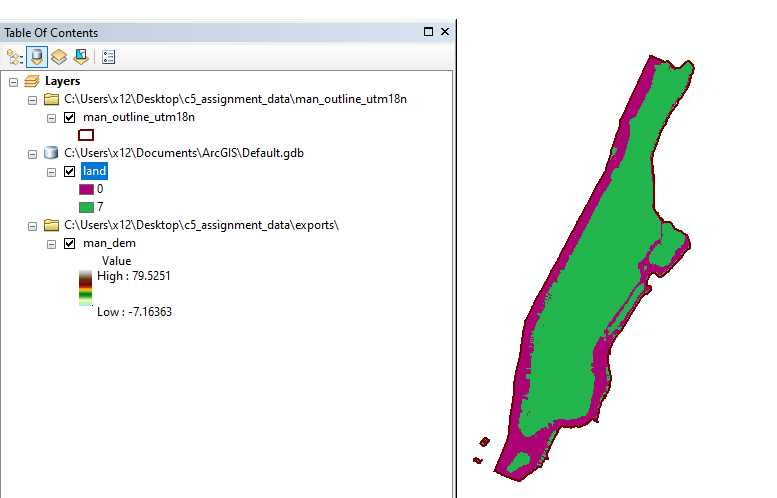
- Populate the tool with the second criteria for the best case scenario (BCS):
- Input conditional raster =
man_dem - Expression -
"VALUE"> 0 and "VALUE" <= 0.28 - True value =
1 - False value =
0 - Output to
Default.gdbasflood_BCS
- Input conditional raster =
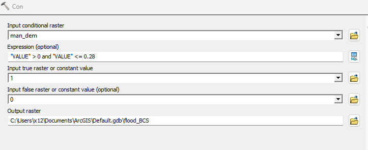
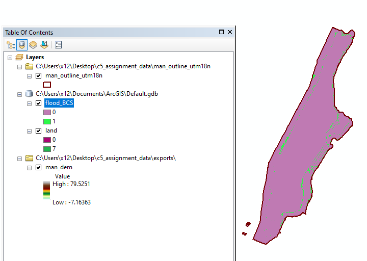
- Populate the tool with the second criteria for the worst case scenario (WCS):
- Input conditional raster =
man_dem - Expression -
"VALUE"> 0 and "VALUE" <= 1.12 - True value =
3 - False value =
0 - Output to
Default.gdbasflood_WCS
- Input conditional raster =
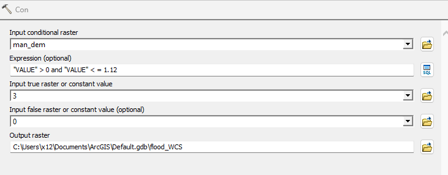
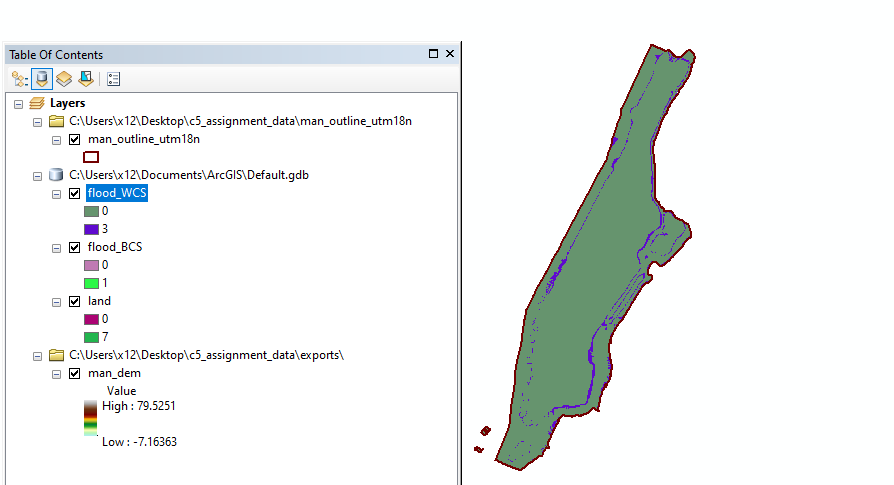
- Populate the tool with the second criteria for the storm surge scenario:
- Input conditional raster =
man_dem - Expression -
"VALUE"> 0 and "VALUE" <= 10 - True value =
5 - False value =
0 - Output to
Default.gdbasflood_storm
- Input conditional raster =
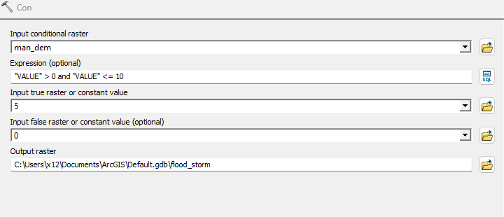
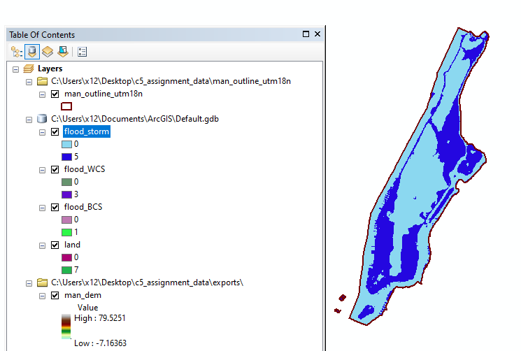
Assignment Step 6:
With the scenario outputs complete, utilize the Raster Calculator to create a final output raster using the following formula:
"flood_storm" + "flood_BCS" + "flood_WCS" + "land"
- To start, open the Raster Calculator and populate the equation as shown above. Output the result as
dem_finalinto theexportsfolder within the original data directory:
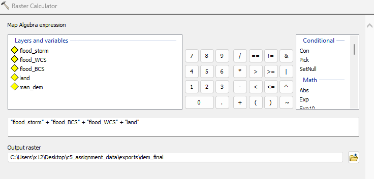
dem_final as output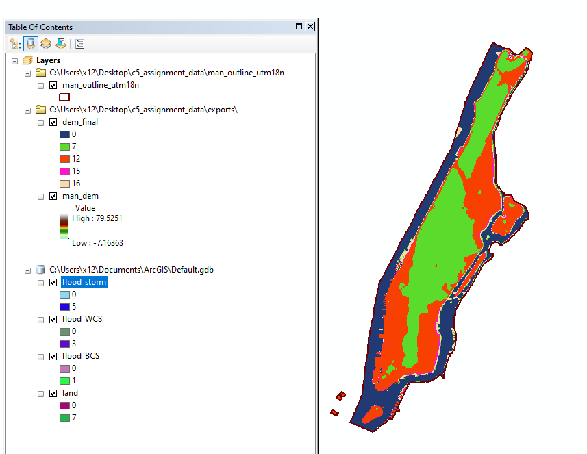
dem_final as output | ResultAssignment Step 6
With the raster analysis complete across all scenarios, turn to quantitative summarization. Here an attribute table will be developed to represent the spatial raster analysis results.
To start, open the attribute table attached to dem_final:
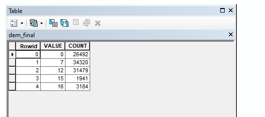
dem_final attribute table- Next, create a new
DoubleType column with namesq_meter:
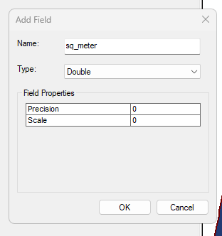
sq_meter column creation- Populate the column with expression:
[COUNT]*900
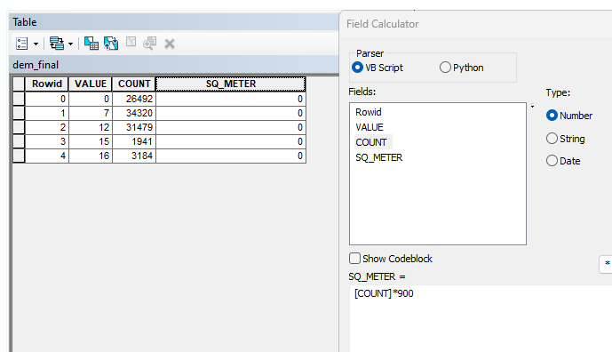
sq_meter column population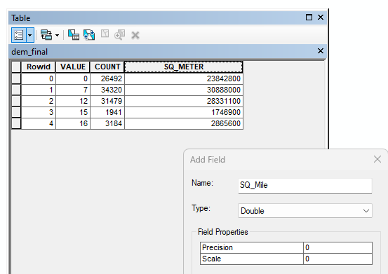
sq_mile column creation- Populate the column with expression:
[SQ_METER]*0.00000038610
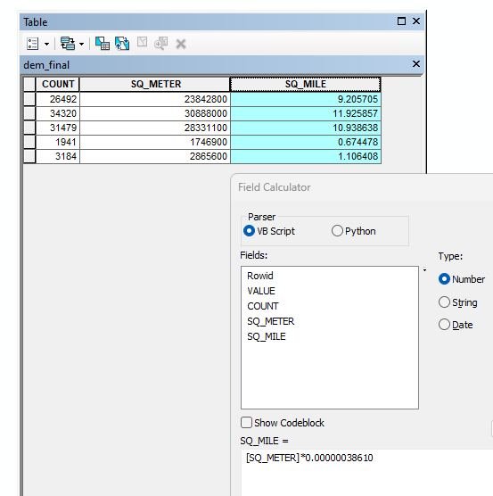
sq_mile column population- Next, a total land calculation denominator must be created for each scenario nominator. To do this, the
watervalue0must be removed from the attribute table. To do this step, an active editing session must be initiated and the row withVALUEas0is removed:
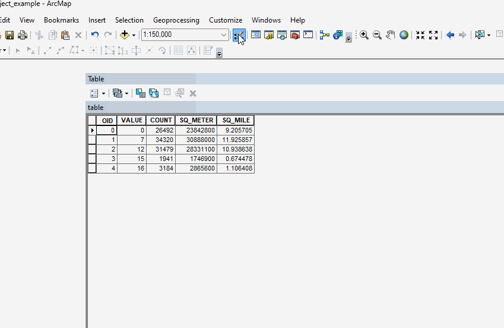
- With
VALUEas0removed, move to determining the total land area via Statistics of Table (right-click column > statistics):
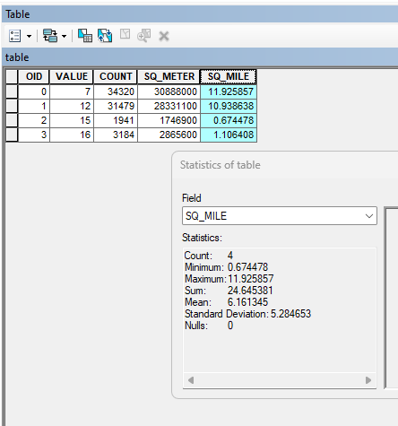
sq_mile summary statistic- Create a column as Type
Double, Name asPCT_land:
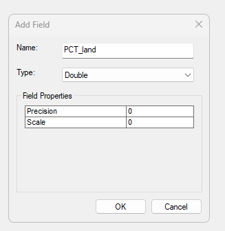
PCT_land column creation- Utilize the following expression in the new
PCT_landcolumn:
([SQ_Mile/24.645381])*100
The value 24.645381 has been derived from the total of area on land across all scenarios; note that your total land value might be slightly different and you should use that value in place of 24.645381.
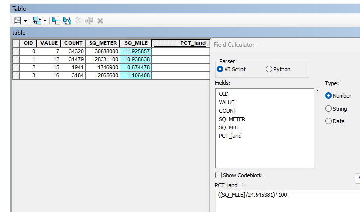
PCT_land column populationAssignment Step 7
- Create a column as Type
Text, Name asClass:
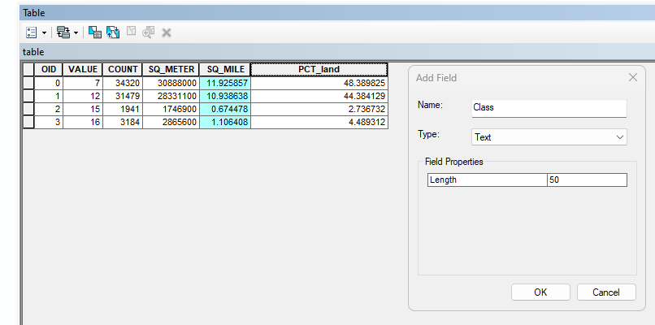
Class column creation- Next, manually select the row for
VALUE7, open Field Calculator and set the expression as:
"Dry Land: All Scenarios"
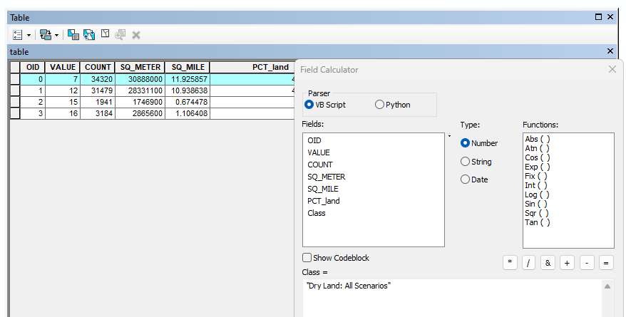
sq_mile summary statistics- Continue through the proceeding rows, making sure to enter each class name that corresponds correctly with each value seen in the table below:
| Value | Scenario |
|---|---|
| 7 | Above Water (No Flooding) |
| 12 | Land flooded by a storm surge |
| 15 | worst-case scenario |
| 16 | best-case scenario |
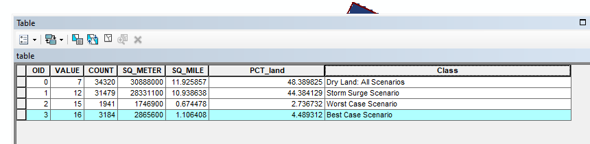
Class column complete for all scenarios- Prior to exporting the table to the map layout, make any table revisions at this juncture. Utilize the Alias property under Field Properties to fine-tune the attribute table.
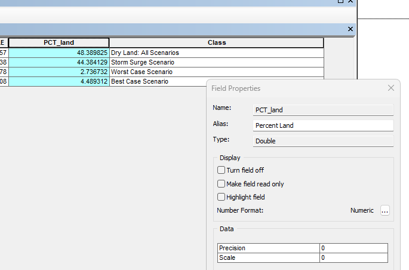
- Export the table in
.dbfformat to theexportsfolder:
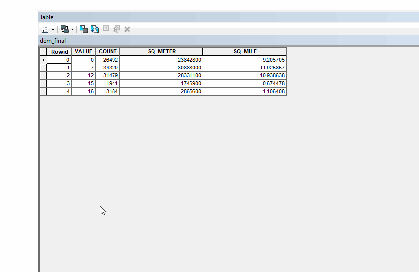
.dbf format- Finally, export the table to the layout to begin the final cartographic design process. Save the
.mxdbefore proceeding.
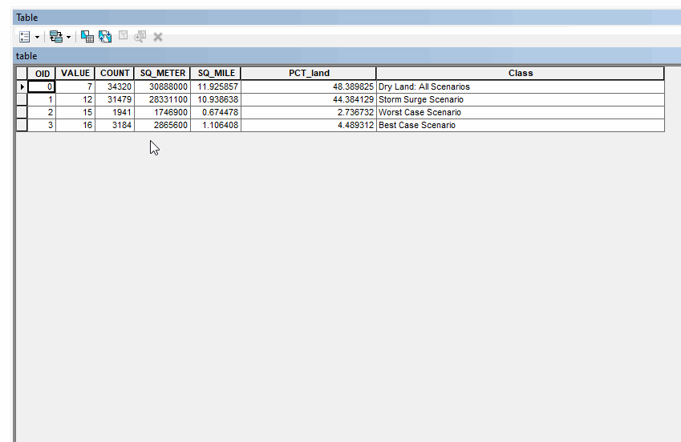
.dbf table to layoutAssignment Step 8 - Map layout & Deliverable
To development the final map design, utilize the map example PDF below to help guide your process.
- Final map layout will include the following elements on either a 11x17” or 8.5x11” Portrait/Landscape 300 DPI:
- Main map frame featuring your cartographic output
- Insert summary table
- A map title
- Legend representing each nominal scenario category
- Simple scale bar tailored to a meaningful distance(s) for Manhattan, NYC (optional)
- North Arrow
- Data source & Author tag
Utilize the following Map Examples to guide your design process:

In the map example above, the table does not correspond with values in this assignment example; disregard the exact values in the example map table, but do check your processing results at each step to make sure your analysis is correct for each scenario.
Concluding Remarks
In this assignment, you have covered several fundamental raster-based processes to achieve a meaningful quantitative result for a pressing climate-related spatial problem. Returning to the original questions, we can now answer them both through the spatial patterns seen in the cartographic output as well as the summary table result of the assignment.
For the first question How much of Manhattan will be inundated by rising sea levels by 2100? we can answer that the best case scenario is approximately
4.4%of Manhattan’s land mass. In the worst case scenario, both the map and the summary result report back2.7%; however, inundation would be additive in the worst case scenario so it really would be both scenarios together for approximately7.1%in the worst case scenario.For the second question How much of Manhattan is at risk of a 10 m (30-foot) storm surge? both mapping and summary table found a very significant spatial extent at
44.38%. Following the additive logic of the worst case scenario for sea level rise, the 10 m storm surge equates to the7.1%land mass given over to sea level rise coupled with the storm surge44.38%for a total of51.48%, literally more than half of Manhattan land mass. We need to keep in mind that this is an unprecedented value; Hurricane Sandy, for as bad as it was, amounted to a 14-foot storm surge.Of important note, both cartographic and summary results are limited in total accuracy due to the relatively large cell size of the assignment DEM input. We utilized this relatively course pixel size (30-meter) in order to speed up the assignment processing. If we were to use 10-meter, 1-meter or even sub-meter resolution DEM, we would certainly achieve more accurate results across all scenarios - it would just take more processing resources to process the more resolute raster data.
Finally, our Manhattan Borough boundary included the administrative boundary including water areas. In order to better represent land area, NYC Planning does offer an accurate shoreline dataset for all 5 boroughs. If we were to use this vector boundary coupled with more resolute DEM raster pixels, we would be able to achieve a more accurate final result in both cartographic and summary table output.